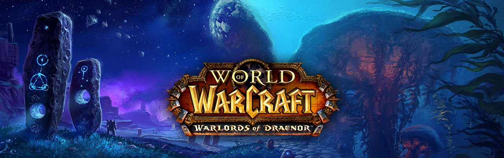

World of Warcraft: The Burning Crusade
World of Warcraft: Wrath of the Lich King
World of Warcraft: Cataclysm
La historia de esta expansión se basa en la reapertura del Portal Oscuro por Lord Kazzak, lo que causa que Azeroth se llene de el ejército de demonios de la Legión Ardiente.
Cuando ambas facciones pasan por el Portal Oscuro, cada una descubre cosas nuevas. La Alianza se reencuentra con héroes que habían pasado antes que ellos y la Horda hacen contacto con unos Orcos que nunca habían sido parte de el ejército que atacó a Azeroth originalmente, los Mag’har. Las dos facciones se unen para poder eliminar al enemigo que había reclamado esta tierra como suya, Illidan Stormrage.
De todas las expansiones de World of Warcraft, esta es probablemente la que más ha llamado la atención y la que más jugadores ha tenido a lo largo de toda la historia del juego.
Su historia continúa a base de The Burning Crusade, en donde los héroes de la Alianza y la Horda peleaban en contra de las fuerzas de la Legión Ardiente, y en contra de ellos mismos. Lo que no sabían era que una fuerza más poderosa también se encontraba ahí, esperando su llegada en el continente congelado, Northrend. El Rey Exánime (Lich King) ha resurgido desde la Ciudadela de la Corona de Hielo (Icecrown Citadel) para reclamar el mundo como suyo. Cuando las fuerzas del mundo se dan cucenta de su presencia, comienzan a pelear en contra de él, quien busca ser el verdadero rey de todo Azeroth, buscando limpiar toda la vida que conocemos en Azeroth.
En esta expansión, Thrall se ve obligado a dejar el mando como líder de la horda para lograr formar un mejor mundo, dejándole el cargo a Garrosh Hellscream. La historia esta vez está enfocada en el regreso de Deathwing the Destroyer (Alamuerte el Destructor), anteriormente Neltharion the Earth Warden quien apareció por última vez hace más de dos décadas. Este individuo tomó este tiempo para curarse y volver a arrasar con todo Azeroth, causando daños caóticos en todo el mundo, cambiando por completo el look del mismo.
Aquí fue donde Garrosh comenzó a tomar ventaja de las cosas que ocurrían en el mundo en contra de la Alianza, quien disfrutaba y reforzaba el odio en contra de ellos.
World of Warcraft: Mists of Pandaria
World of Warcraft: Warlords of Draenor
World of Warcraft: Legion
De todas las Expansiones de World of Warcraft, esta sería la que más polémica causó, ya que las decisiones que se tomaron en el pasado hacen que esta expansión termine de una manera abrupta. Todo comienza cuando Garrosh Hellscream, el actual líder de la Horda, busca expandir el territorio que les pertenece en Kalimdor. Sus ataques destruyeron por completo la ciudad de Theramore, causando violencia entre ambas facciones, y en un momento una flota de un orco y otra de un humano se encuentran con las islas de Pandaria, donde encuentran un nuevo mundo y los Pandas se vuelven una nueva raza jugable, pudiendo elegir entre la Horda o la Alianza a la hora de salir de su zona inicial. Todo Pandaria está infectado por el Sha, que son criaturas manifestadas por las energías negativas de todo Pandaria.
Más tarde en la expansión, la sed de sangre de Garrosh Hellscream lo lleva a hacer lo impensable, se vuelve en contra de la Horda regular y crea los «Horda Verdaderos», un ejército sólo de Orcos para dominar a todo Azeroth. Aquí todos se unen, Alianza y Horda, para vencerlo y hacerlo pagar por sus actos.
Ya sabemos que todas las expansiones de World of Warcraft llevan un seguimiento con la anterior, y en este caso no sólo combinan Mists of Pandaria, si no que también incluyen fragmentos del pasado, en donde Garrosh Hellscream, antes de ser juzgado y castigado por los actos que cometió anteriormente, escapa a través de un portal con la ayuda de un Dragón de Bronce llamado Kairoz. El portal que él usa es para poder alterar el pasado en el mundo anterior de Draenor, evitando que su padre, Grommash Hellscream, beba de la sangre de Mannoroth.
Cuando Garrosh logra hacer contacto con su padre del pasado, comienza la creación del portal oscuro que ayuda a este ejército de Hordas de Hierro creado con la tecnología que Garrosh trae del presente, y ayudarlos a llegar a Azeroth. Todo comienza con la eliminación de Mannoroth, y con la ayuda de Kargath, se logran hacer para atrás y quedarse en el Draenor del pasado en donde héroes como tú deberán ayudarlos a eliminarlos. Acá tabién es donde los dos bandos se deben dividir y la Horda se une al Clan Frostwolf y los Draenei a la Alianza.
¿Recuerdas los eventos ocurridos en Warlords of Draenor? Aquí continúan ellos mismos, pero ya que nunca se llegó a Gul’dan quien era el enemigo principal (excluyendo a Garrosh que fue eliminado por Thrall en un Mak’gora durante la expansión), él sigue causando estragos por quién sabe cuántas expansiones de World of Warcraft más.
Gul’dan comienza su invasión y encuentra los restos de Illidan en el universo presente.